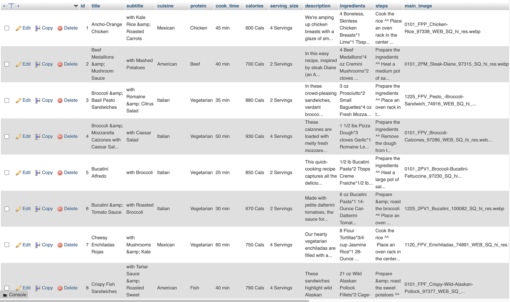
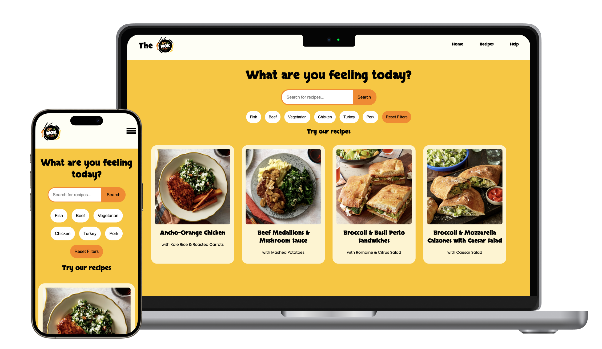
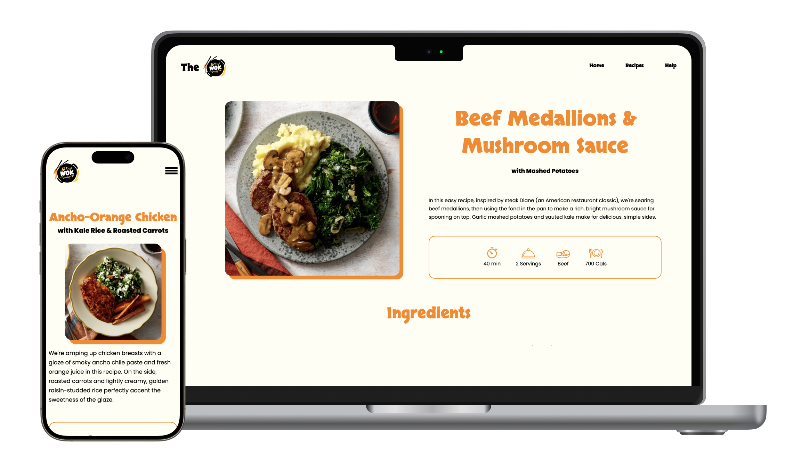
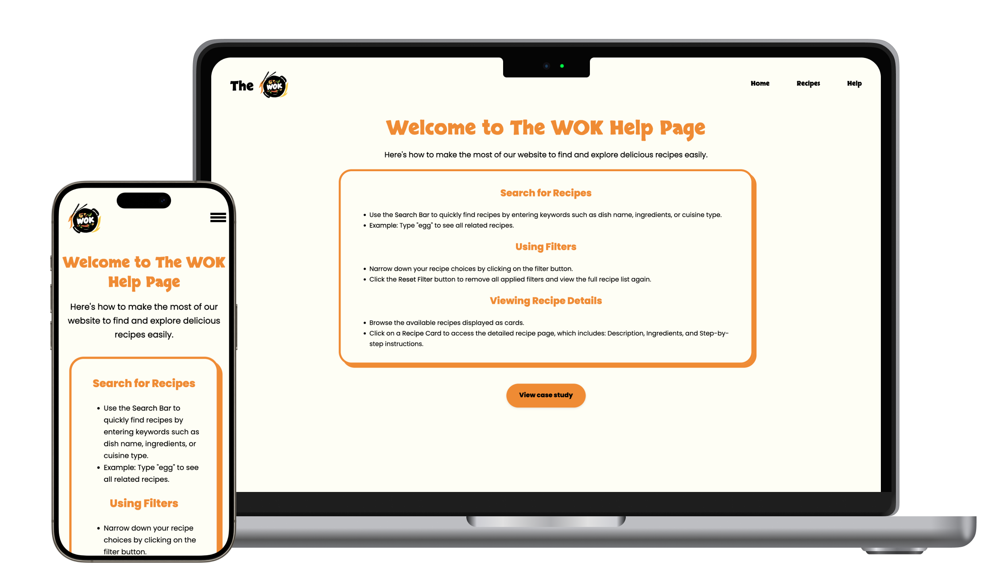

Context and Challenge
Background
This is an independent project assigned as a practical exercise to deepen understanding of server-side scripting (PHP) and how it integrates with client-side technologies. The project also introduced database management concepts through phpMyAdmin, culminating in a functional, data-driven web application.
Problem
The challenge was to design and develop a fully functional recipe website that dynamically loads data from a database while providing users with an engaging and intuitive experience for browsing and filtering recipes.
Goal and Objectives
- Develop a dynamic website using PHP as the primary language.
- Integrate MySQL for database management and dynamic content.
- Create user-friendly features such as search, filtering, and detailed recipe pages.
- Ensure responsiveness across various screen sizes.
This was a solo project, where I managed all aspects of development, from concept to completion.
Process and Insight
Alpha Phase
I started with branding by selecting a logo that I found visually appealing and building the website's design around it. From there, I developed a cohesive color palette and design aesthetic. Once the design foundation was set, I built the initial static version of the website using HTML, CSS, and JavaScript, ensuring it was responsive and visually appealing.
Beta Phase
During this phase, I transitioned the static pages into dynamic ones using PHP, enabling the website to deliver personalized and interactive content. I established database connections with MySQL to store and retrieve recipe data efficiently, leveraging phpMyAdmin to design and manage a well-structured database. This database holds all the recipe details, including titles, subtitles, descriptions, ingredients, protein type, cuisine, cook time, and images.

Database stores all recipes' information
Then I implemented a robust search and filter functionality. Users can search for recipes using keywords that are dynamically matched across multiple fields, such as ingredients, and cuisine, or apply filters to narrow down results based on specific criteria like protein type. The system uses prepared statements to ensure secure and efficient querying of the database, preventing SQL injection vulnerabilities.
To display all recipes or those filtered by the user's keyword, I used a foreach loop to iterate through the results retrieved from the database and dynamically render them on the webpage. Each recipe displays its image, title, and a link directing users to a detailed page for that specific recipe
For the recipe's detail page, I also used PHP to retrieve data from the database and display it dynamically on the page. To present the instructions step-by-step, I utilized the explode function to break the instruction string into individual steps and display them sequentially.
I used the RAND() function in my SQL query to retrieve three random recipes from the database and a for loop to display them on the homepage. This ensures users see a fresh selection of recipes with each reload.
Final Phase
In the final phase, I focused on polishing the project to ensure all PHP scripts and database queries worked seamlessly. I optimized the code for better performance and conducted extensive responsive testing across various devices to guarantee a consistent user experience.
Solution
Home Page
On the homepage, I implemented a feature to display three random recipes that update every time the page reloads. To ensure easy navigation, I added a "View All Recipes" button that links directly to the main recipe page.
Recipe Page
The recipe page displays 40 recipes and includes a search bar and a protein filter. Users can search for recipes using keywords or narrow down results by selecting a specific protein type. I also added a "Clear Filter" button, which resets the filters and restores the full list of recipes. Each recipe card includes a clickable link that redirects users to its detailed page.

Recipe Detail Page
The detail page is designed to provide all necessary information about a specific recipe. It displays the recipe's title, subtitle, and description, alongside a list of ingredients with corresponding images. I also included step-by-step instructions with visuals to guide users. The layout is fully responsive, adapting dynamically to different screen sizes for a seamless user experience.

Help Page
To make the website more user-friendly, I included a help page that provides detailed guidance on navigating and using the website effectively.
